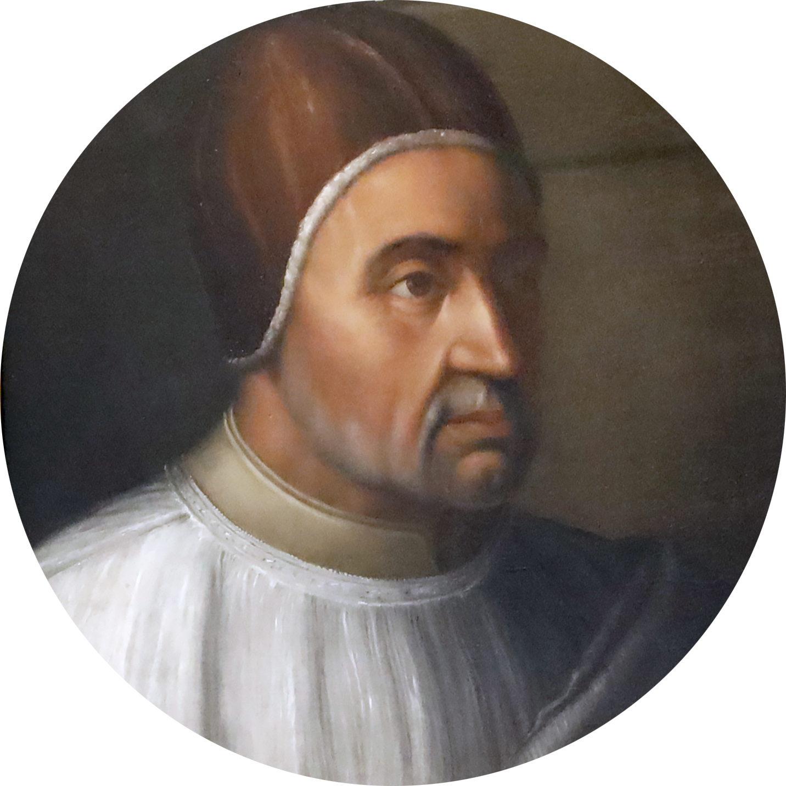

Bendito seja o Deus e Pai de Nosso Senhor Jesus Cristo, Pai das misericórdias e Deus de toda a consolação, que diariamente promove com muitos grandes favores e acompanha com felizes resultados muito além de nossos méritos, nossos objetivos e piedosos desejos, pelos quais no cumprimento de nossos deveres pastorais nós ansiamos e fomentamos com muitos trabalhos, na medida em que isso nos foi permitido do alto, a salvação do povo Cristão.
De fato, após a união da Igreja Oriental com a Igreja Ocidental no Concílio Ecumênico de Florença, e após o retorno dos Armênios, dos Jacobitas e do povo da Mesopotâmia, nós enviamos nosso venerável irmão André, arcebispo da Kalocsa, às terras orientais e à ilha de Chipre. Ele deveria confirmar, na fé que havia sido aceita, os Gregos, Armênios e Jacobitas ali vivendo, pelos seus sermões, exposições e explicações dos decretos emitidos para sua união e seu retorno.
Ele também deveria tentar trazer de volta para a verdade da fé, usando nossos avisos e exortações, qualquer um que ele encontrasse que fosse estranho à verdade da fé em outras seitas, fossem eles seguidores de Nestório ou de Macário. Ele se dedicou a essa tarefa com vigor, graças ao conhecimento e a outras virtudes com as quais o Senhor, o doador das graças, o enriqueceu. Ele finalmente eliminou dos corações deles, após muitas discussões, primeiramente toda a impureza de Nestório, que afirmava que Cristo é somente um homem e que a Bem-Aventurada Virgem Maria é a mãe de Cristo, mas não de Deus, e em seguida a do ímpio Macário de Antioquia, que, apesar de confessar que Cristo é verdadeiro homem e verdadeiro Deus, afirmava que há nele somente a vontade e o princípio de ação divina, diminuindo, assim, sua humanidade.
Com o auxílio divino ele converteu à verdade da fé ortodoxa de nossos veneráveis irmãos Timóteo, o metropolita dos Caldeus, que até agora eram chamados de Nestorianos em Chipre até hoje porque costumavam seguir Nestório, e Elias, bispo dos Maronitas, que com seu povo no mesmo reino havia sido contaminado pelos ensinamentos de Macário, juntamente com toda uma multidão de povos e clérigos sujeitos a ele na ilha de Chipre. A esses prelados a e todos sujeitos a eles, ele transmitiu a fé e a doutrina que a Igreja sempre prezou e observou. Além disso, os referidos prelados aceitaram esta fé e doutrina com grande veneração em uma grande assembleia pública de diferentes povos que viviam naquele reino, realizada na Igreja Metropolitana de Santa Sofia.
Depois disso, os Caldeus enviaram a nós o referido metropolita Timóteo, e o Bispo Elias dos maronitas enviou um emissário para fazer a nós uma profissão de fé solene da Igreja Romana, que pela providência do Senhor e com o auxílio do bem-aventurado Pedro e do apóstolo sempre permaneceu imaculada. Timóteo, o metropolita, professou esta fé e doutrina perante nós com reverência e devoção, nesta sagrada congregação geral do concílio ecumênico de Latrão, primeiro em sua própria língua Caldeia, sendo interpretada para o Grego e depois traduzida do Grego para o Latim, da seguinte forma: Eu, Timóteo, arcebispo de Tarso e metropolita dos Caldeus que estão em Chipre, em meu próprio nome e em nome de todo meu povo em Chipre, professo, juro e prometo a Deus Todo-Poderoso, Pai, Filho e Espírito Santo, e depois a vós, santíssimo bem-aventurado pai papa Eugênio IV, a essa santa sé apostólica e a essa santa e venerável congregação, que doravante permanecerei sempre sob a obediência vossa e de vossos sucessores e da Santa Igreja Romana, como única mãe e cabeça de todas as outras igrejas. Além disso, no futuro eu sempre defenderei e professarei que o Espírito Santo procede do Pai e do Filho, como a Santa Igreja Romana ensina e professa. Além disso, no futuro eu sempre defenderei e aprovarei duas naturezas, duas vontades, uma hipóstase e dois princípios de ação em Cristo.
Além disso, no futuro eu sempre confessarei e aprovarei todos os sete sacramentos da Santa Igreja Romana, como ela defende, ensina e prega.
Além disso, no futuro eu nunca adicionarei óleo na Santa Eucaristia.
Além disso, no futuro eu sempre defenderei, confessarei, pregarei e ensinarei tudo o que a Santa Igreja Romana defende, confessa, ensina e prega e eu rejeito, anatematizo e condeno tudo o que ela rejeita, anatematiza e condena; no futuro eu sempre rejeitarei, anatematizarei, e condenarei especialmente as impiedades e blasfêmias do perverso heresiarca Nestório e todas as outras heresias que se levantam contra essa Santa Igreja Católica e Apostólica. Essa é a fé, santo padre, que eu juro e prometo defender e observar e garantir que seja defendida e observada por todos os que estão sujeitos a mim. Eu me comprometo e prometo solenemente privar de todos os seus bens e benefícios, excomungar e denunciar como herege e condenado, qualquer um que a rejeitar e se levantar contra ela e, se for obstinado, degradá-lo e o entregá-lo ao braço secular.
Então, nosso amado filho em Cristo Isaac, emissário de nosso venerável irmão Elias, bispo dos Maronitas, em seu lugar e em seu nome, rejeitando a heresia de Macário sobre uma vontade em Cristo, fez com grande veneração uma profissão de fé similar em todos os detalhes. Pela devoção dessas profissões e pela salvação de tantas almas nós oferecemos imensas ações de graças a Deus e a Nosso Senhor Jesus Cristo, que em nossos tempos está ampliando a fé e concedendo benefícios a tantos povos cristãos de maneira tão grandiosa. Nós recebemos e aprovamos essas profissões; nós recebemos no seio da santa mãe igreja o metropolita, o bispo em Chipre e aqueles sujeitos a ele; e enquanto eles permanecerem na fé, obediência e devoção acima mencionados, nós os honramos com os seguintes favores e privilégios.
Primeiramente, ninguém no futuro ousará chamar de herege o referido metropolita dos caldeus e o referido bispo dos maronitas, ou seus clérigos e povos ou qualquer indivíduo entre eles, ou chamar de Nestorianos os Caldeus. Se qualquer um desprezar essa ordenança, nós ordenamos que ele seja excomungado até que ofereça uma satisfação digna, ou seja punido, no julgamento do ordinário, por alguma outra pena temporal. Além disso, o referido metropolita, bispo e seus sucessores devem ser imediatamente preferidos em toda e qualquer honra aos bispos que estão separados da comunhão da Santa Igreja Romana.
Além disso, no futuro eles poderão impor censuras aos seus súbditos, e aqueles que eles devidamente excomungarem no futuro serão considerados por todos como excomungados, e quem eles absolverem serão tidos por todos como absolvidos.
Além disso, os referidos prelados, padres e seus clérigos podem celebrar suas divinas liturgias livremente nas igrejas de Católicos, e Católicos podem celebrá-las livremente em suas igrejas.
Além disso, no futuro, os referidos prelados, clérigos, seus leigos e leigas, que aceitaram esta união e esta fé, podem optar por serem enterrados nas igrejas de católicos, mas segundo o rito católico latino, e desfrutar e usufruir de todos os benefícios, imunidades e liberdades que outros católicos, leigos e clérigos, possuem e desfrutam no referido reino. Que ninguém, portanto... Se alguém, porém...